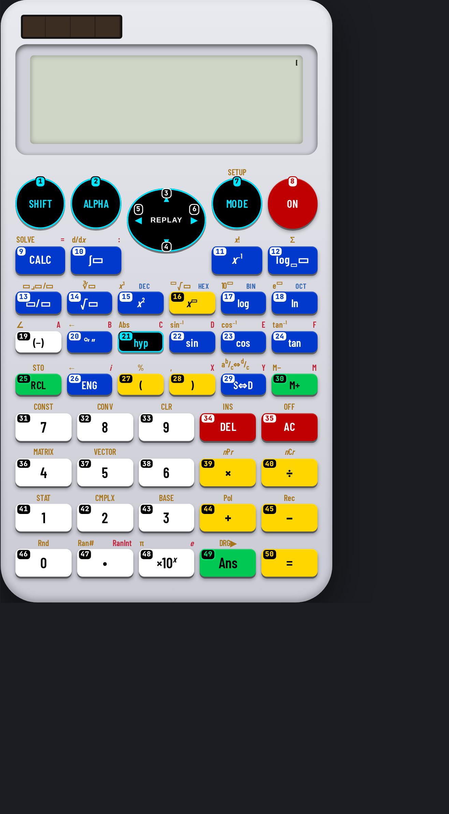

This manual belongs to the U-45 CALCULATORS app and describes calculator #6 — Scientific Natural-Display Solar (silver/violet) exactly as it behaves in the app. Every worked example and every drill answer in this book was run on the app's own keys by an automated checker before printing; only results that matched were kept.
Keys are written as a chip showing the key number and its face, for example #1 SHIFT. Numbers follow the numbering printed on the keys (switch it on with “# On”). A shifted function is written as two chips: the shift key, then the key that carries the function.
algebraic (type the expression as written, then = / EXE).
Open U-45 CALCULATORS, choose #6 from the home screen (or the jump list at the top), and the calculator appears with its numbered, colour-coded keys. Click or tap keys, or type on a keyboard.
Every key carries a small number in the same reading order as this manual (left→right, top→bottom; the navigation pad counts ▲ ▼ ◀ ▶ then its centre). Use “# On / # Off” in the bar above the calculator to show or hide them — the setting is remembered.
Keys are coloured by job: white = digits, yellow = operators/execute, blue = functions, green = memory/variables, red = clear/delete/power, black with cyan = shift/modes/menus/navigation. Press “Classic” to return to the original model colours and “Hi-Contrast” to come back.
Display text uses the U45 Display face, key legends use U45 Keys (a condensed face that stays readable on small keys) and key numbers / helper text use U45 Mono. All three are bundled inside the app, so they work offline.
The Copy button copies exactly what the display shows (indicators that are switched off are skipped) so you can paste a result into a message or spreadsheet.
Fit scales the calculator to your screen; 1:1 shows it at its design size. On a phone, Fit is the comfortable choice.
Reset rebuilds this calculator from scratch: display, memory, stack and modes return to their start-up state. Use it before each worked example in this manual.
On a computer you can type: digits, + − * / ^ ( ), Enter or = to execute, Backspace to delete, Esc to clear, arrows to move. Letters reach common functions (see the Keyboard shortcuts chapter).
Hover over (or long-press) a key to see “#number name”.
A cyan icon rail on the right of every calculator opens 15 panels: Currency (166 currencies, rates auto-updated from open.er-api.com or Frankfurter when online and cached with a date; the bundled dated snapshot is used offline), Units (exact SI factors), Health (published formulas, not medical advice), Simple, Complex, Loans, Construction, Mechanical and Engineering (30+ numbered tools each), Calendar generator, Customize (26 options, saved per calculator), Settings (31 options), History, Hide and View. On narrow phones the rail shows icons only.
Every calculation is logged per calculator with a date and time. Open History on the rail to search, re-use (types the input back into the calculator), copy, delete one, select several and delete, or delete all (asks for confirmation). History is stored encrypted on this device (AES-GCM); exporting it needs the passcode.
The green CS button between Restore and Social reads a problem from the camera, a photo, a PDF or a text file. Recognition (Tesseract OCR, English) runs offline on the device; an online language download is only used if you switch it on in Settings. Check and edit the recognised text, then Solve shows the steps offline. OCR is not available when the app is opened as a plain file:// page in a browser.
The layout selector between Fit and # offers Auto plus 12 layouts: 3D classic, 3D high-contrast, Classic, Pocket, Compact, Expanded, Desktop wide, Split, One-hand left, One-hand right, Large print and Minimal. Auto picks one for your screen and your choice is remembered per calculator. The View panel hides the top bars, the tool bar, the rail or everything (full screen); the round yellow ⤢ button at bottom-left (or Esc) always restores the normal view.
The Hide panel lists every button, rail icon and section of this calculator as tick boxes. Hiding is instant; unhiding asks for the app passcode.
Right-click, drag and long-press saving of images is blocked inside the app. Saving or sharing an image export (PNG, JPG, QR, calendar), printing a calendar, and downloading or sharing the app itself ask for the passcode, and exported images carry a U-45 watermark. Honest note: this cannot stop a screenshot or screen recording made by the operating system or another device.
U-45 CALCULATORS is an offline app: after the first load everything — including fonts — comes from the device.
| Colour | Group | Keys on this model |
|---|---|---|
| num | Digits & number entry | #19, #31, #32, #33, #36, #37, #38, #41, #42, #43, #46, #47, #48 |
| op | Operators & execute | #16, #27, #28, #39, #40, #44, #45, #50 |
| fn | Functions | #9, #10, #11, #12, #13, #14, #15, #17, #18, #20, #22, #23, #24, #26, #29 |
| mem | Memory, variables & registers | #25, #30, #49 |
| clr | Clear, delete & power | #8, #34, #35 |
| mod | Shift, modes, menus & navigation | #1, #2, #3, #4, #5, #6, #7, #21 |
87 features: 65 live on the keys, 9 app/UI features, 13 planned (documented but not yet working — they are clearly marked and never used in examples).
Calculator #6 with key numbers shown (Hi-Contrast colours).
“Shift” = 2nd / f / SHIFT layer; “Alpha” = ALPHA layer; “3rd” = 3rd / g layer. A dot means the layer is empty on that key.
| # | Face | Shift | Alpha | 3rd | Group |
|---|---|---|---|---|---|
| 1 | SHIFT | · | · | · | mod |
| 2 | ALPHA | · | · | · | mod |
| 3 | ▲ | · | · | · | mod |
| 4 | ▼ | · | · | · | mod |
| 5 | ◀ | · | · | · | mod |
| 6 | ▶ | · | · | · | mod |
| 7 | MODE | SETUP | · | · | mod |
| 8 | ON | · | · | · | clr |
| 9 | CALC | SOLVE | = | · | fn |
| 10 | ∫▭ | d/dx | : | · | fn |
| 11 | x⁻¹ | x! | · | · | fn |
| 12 | log▭▭ | Σ | · | · | fn |
| 13 | ▭/▭ | ▭⌟▭/▭ | · | · | fn |
| 14 | √▭ | ∛▭ | · | · | fn |
| 15 | x² | x³ | · | · | fn |
| 16 | x▭ | ▭√▭ | · | · | op |
| 17 | log | 10▭ | · | · | fn |
| 18 | ln | e▭ | · | · | fn |
| 19 | (−) | ∠ | A | · | num |
| 20 | °′″ | ← | B | · | fn |
| 21 | hyp | Abs | C | · | mod |
| 22 | sin | sin⁻¹ | D | · | fn |
| 23 | cos | cos⁻¹ | E | · | fn |
| 24 | tan | tan⁻¹ | F | · | fn |
| 25 | RCL | STO | · | · | mem |
| 26 | ENG | ← | i | · | fn |
| 27 | ( | % | · | · | op |
| 28 | ) | , | X | · | op |
| 29 | S⇔D | ab/c⇔d/c | Y | · | fn |
| 30 | M+ | M− | M | · | mem |
| 31 | 7 | CONST | · | · | num |
| 32 | 8 | CONV | · | · | num |
| 33 | 9 | CLR | · | · | num |
| 34 | DEL | INS | · | · | clr |
| 35 | AC | OFF | · | · | clr |
| 36 | 4 | MATRIX | · | · | num |
| 37 | 5 | VECTOR | · | · | num |
| 38 | 6 | · | · | · | num |
| 39 | × | nPr | · | · | op |
| 40 | ÷ | nCr | · | · | op |
| 41 | 1 | STAT | · | · | num |
| 42 | 2 | CMPLX | · | · | num |
| 43 | 3 | BASE | · | · | num |
| 44 | + | Pol | · | · | op |
| 45 | − | Rec | · | · | op |
| 46 | 0 | Rnd | · | · | num |
| 47 | • | Ran# | RanInt | · | num |
| 48 | ×10x | π | e | · | num |
| 49 | Ans | DRG▶ | · | · | mem |
| 50 | = | · | · | · | op |
Every key on calculator #6, in number order, with every function it carries in this app.
21 examples, each run on this calculator's keys by the U-45 checker. Follow the chips in order.
Calculate 12 + 3 × 4. Press Reset first.
#41 1 → #42 2 → #44 + → #43 3 → #39 × → #36 4 → #50 =
Display shows 24 — expected 24. ✔ verified on the app.
Multiplication is done before addition, so the calculator holds the + until the × part is finished.
Calculate (12 + 8) ÷ 4. Press Reset first.
#27 ( → #41 1 → #42 2 → #44 + → #32 8 → #28 ) → #40 ÷ → #36 4 → #50 =
Display shows 5 — expected 5. ✔ verified on the app.
Brackets force the sum to be worked out before the division.
Calculate (3 + 4) × (9 − 2). Press Reset first.
#27 ( → #43 3 → #44 + → #36 4 → #28 ) → #39 × → #27 ( → #33 9 → #45 − → #42 2 → #28 ) → #50 =
Display shows 49 — expected 49. ✔ verified on the app.
Both brackets are evaluated first, then multiplied.
Calculate 12². Press Reset first.
#41 1 → #42 2 → #15 x² → #50 =
Display shows 144 — expected 144. ✔ verified on the app.
x² squares the value — quicker and safer than typing the number twice.
Calculate √144. Press Reset first.
#14 √▭ → #41 1 → #36 4 → #36 4 → #50 =
Display shows 12 — expected 12. ✔ verified on the app.
The square-root key returns the principal (positive) root.
Calculate 2^10. Press Reset first.
#42 2 → #16 x▭ → #41 1 → #46 0 → #50 =
Display shows 1024 — expected 1024. ✔ verified on the app.
The power key raises the first number to the second.
Calculate 1 ÷ 0.25 (x⁻¹). Press Reset first.
#46 0 → #47 • → #42 2 → #37 5 → #11 x⁻¹ → #50 =
Display shows 4 — expected 4. ✔ verified on the app.
x⁻¹ (1/x) gives the reciprocal — handy for resistors in parallel or rates.
Calculate tan 45° (Deg mode). Press Reset first.
#24 tan → #36 4 → #37 5 → #28 ) → #50 =
Display shows 1 — expected 1. ✔ verified on the app.
Trig functions use the current angle unit; these answers assume degrees (the start-up setting).
Calculate log 1000. Press Reset first.
#17 log → #41 1 → #46 0 → #46 0 → #46 0 → #28 ) → #50 =
Display shows 3 — expected 3. ✔ verified on the app.
log is base-10: it counts the zeros of a power of ten.
Calculate ln 1. Press Reset first.
#18 ln → #41 1 → #28 ) → #50 =
Display shows 0 — expected 0. ✔ verified on the app.
ln is the natural (base-e) logarithm.
Calculate −5 + 12. Press Reset first.
#19 (−) → #37 5 → #44 + → #41 1 → #42 2 → #50 =
Display shows 7 — expected 7. ✔ verified on the app.
Use the sign key for a negative number — not the subtraction key.
Calculate 6×10^2 × 3. Press Reset first.
#38 6 → #48 ×10x → #42 2 → #39 × → #43 3 → #50 =
Display shows 1800 — expected 1800. ✔ verified on the app.
The exponent key enters ×10ⁿ without typing × 10 ^.
Calculate π × 2.5². Press Reset first.
#1 SHIFT → #48 π → #39 × → #42 2 → #47 • → #37 5 → #15 x² → #50 =
Display shows 19.63495408 — expected 19.63495408. ✔ verified on the app.
π is stored to full precision — never type 3.14.
Calculate 5C2. Press Reset first.
#37 5 → #1 SHIFT → #40 nCr → #42 2 → #50 =
Display shows 10 — expected 10. ✔ verified on the app.
nCr counts selections where order does not matter.
Calculate 5!. Press Reset first.
#37 5 → #1 SHIFT → #11 x! → #50 =
Display shows 120 — expected 120. ✔ verified on the app.
n! multiplies 1×2×…×n; 0! is 1 by definition.
Calculate 100 × 4 = , then Ans ÷ 2. Press Reset first.
#41 1 → #46 0 → #46 0 → #39 × → #36 4 → #50 = → #40 ÷ → #42 2 → #50 =
Display shows 200 — expected 200. ✔ verified on the app.
Pressing an operator straight after a result continues from that answer (Ans).
Calculate 15 % of 80. Press Reset first.
#32 8 → #46 0 → #39 × → #41 1 → #37 5 → #1 SHIFT → #27 % → #50 =
Display shows 12 — expected 12. ✔ verified on the app.
The percent key turns the second number into a percentage of the first.
Calculate (4 + 8 + 15) ÷ 3. Press Reset first.
#27 ( → #36 4 → #44 + → #32 8 → #44 + → #41 1 → #37 5 → #28 ) → #40 ÷ → #43 3 → #50 =
Display shows 9 — expected 9. ✔ verified on the app.
Add up the values, then divide by how many there are.
Calculate 50 − 4 × 6 + 7. Press Reset first.
#37 5 → #46 0 → #45 − → #36 4 → #39 × → #38 6 → #44 + → #31 7 → #50 =
Display shows 33 — expected 33. ✔ verified on the app.
Only the × part is done first; the − and + are then worked left to right.
Calculate 360 ÷ 4 ÷ 9. Press Reset first.
#43 3 → #38 6 → #46 0 → #40 ÷ → #36 4 → #40 ÷ → #33 9 → #50 =
Display shows 10 — expected 10. ✔ verified on the app.
Division is worked left to right: the first quotient is divided again.
Calculate ((3 + 5) × 4 − 2) ÷ 10. Press Reset first.
#27 ( → #27 ( → #43 3 → #44 + → #37 5 → #28 ) → #39 × → #36 4 → #45 − → #42 2 → #28 ) → #40 ÷ → #41 1 → #46 0 → #50 =
Display shows 3 — expected 3. ✔ verified on the app.
The innermost brackets are worked out first, then the outer brackets, then the division.
After a result, press ◀ or ▶ to bring the last expression back with the cursor in it; change one number and press = again.
Start a line with an operator (e.g. ×) and the calculator inserts Ans automatically — great for compound growth: 1.05 ×, then = = = …
Natural-display models keep fractions, √ and π exact. Press S⇔D to flip to decimal; press it again to return.
Trailing closing brackets can be left off; = closes them for you.
Type 2π or 3(4+1) without ×. Implicit multiplication binds tighter than ÷ on textbook models — use brackets if in doubt.
Store a value you reuse (e.g. g = 9.81) with STO and a letter; then type the letter in formulas.
x^y chains right to left: 2^3^2 = 2^9 = 512, not 64. Use brackets: (2^3)^2 = 64.
Check the D / R / G indicator before trig. sin 30 = 0.5 only in degrees.
M+ / M− keep a running total separate from the calculation line; RCL M shows it.
Use ▲ ▼ to scroll earlier lines; press = on an old line to re-run it.
55 extra functions sit on shifted layers. Press the layer key once, then the key: for example #1 then #7 → SETUP; #1 then #9 → SOLVE; #2 then #9 → =; #1 then #10 → d/dx.
Use Appendix B (function finder): look up the function, read its key number, then find that number on the keypad. Numbers run left→right, top→bottom from #1 to #50.
29 keys on this model have a keyboard shortcut (see chapter 7). Typing digits and operators is much faster than clicking.
Estimate first (round each number) and compare with the display. If the answer is 10× or 100× off, a decimal point or percent key was missed.
Press Copy in the bar above the calculator to put the display text on the clipboard instead of retyping it.
Hi-Contrast colours use black/white/yellow/blue/green/red with black or white text for maximum contrast; key numbers stay on in both colour schemes.
With the calculator open on a computer, these physical keys press the numbered keys below (Ctrl/Alt/⌘ combinations are left to the browser). Shifted functions are reached by clicking the shift key first.
| Keyboard | # | Key | Does |
|---|---|---|---|
| i | #11 | x⁻¹ | Reciprocal x⁻¹ (1/x) |
| r | #14 | √▭ | Square root √ |
| q | #15 | x² | Square x² |
| ^ | #16 | x▭ | Power xʸ / ^ — raise to any power. Chains right-to-left (2^3^2 = 2^9 = 512) |
| l | #17 | log | Common logarithm log₁₀ |
| n | #18 | ln | Natural logarithm ln |
| s | #22 | sin | Sine (uses the current angle unit) |
| c | #23 | cos | Cosine (current angle unit) |
| t | #24 | tan | Tangent (current angle unit) |
| ( | #27 | ( | Opening bracket ( |
| ) | #28 | ) | Closing bracket ). Closing brackets at the end of a line may be omitted |
| 7 | #31 | 7 | Digit 7 |
| 8 | #32 | 8 | Digit 8 |
| 9 | #33 | 9 | Digit 9 |
| Backspace Delete | #34 | DEL | DEL — delete the character at the cursor |
| 4 | #36 | 4 | Digit 4 |
| 5 | #37 | 5 | Digit 5 |
| 6 | #38 | 6 | Digit 6 |
| * x | #39 | × | Multiplication × |
| / | #40 | ÷ | Division ÷ |
| 1 | #41 | 1 | Digit 1 |
| 2 | #42 | 2 | Digit 2 |
| 3 | #43 | 3 | Digit 3 |
| + | #44 | + | Addition + |
| - | #45 | − | Subtraction − |
| 0 | #46 | 0 | Digit 0 |
| . , | #47 | • | Decimal point. Pressing it first gives “0.”; a second point in the same number is ignored |
| e | #48 | ×10x | ×10ˣ / EXP / EE — enter a power-of-ten exponent (scientific notation), e.g. 6.02 ×10ˣ 23 |
| Enter = | #50 | = | Execute / = — evaluate the line and show the result (EXE / ENTER / =) |
| “# On / # Off” | show / hide key numbers |
| “Classic / Hi-Contrast” | switch key colours |
| “Copy” | copy display text |
| “Fit / 1:1” | scale to screen / design size |
| “Reset” | restart this calculator |
| Jump list | switch to another of the 45 calculators |
The negative key (−) and the subtraction key are different; “− 5” at the start uses Ans − 5.
If sin 30 gives −0.988, the calculator is in radians. Switch to degrees in SETUP.
−3² = −9 because the square is applied first. Type (−3)² to get 9.
1 ÷ 2π may be read as 1 ÷ (2π) on textbook models. Type 1 ÷ (2 × π) explicitly to be sure.
SHIFT applies only to the next key. If the S indicator is still lit, press SHIFT again to cancel.
AC clears the line but not memory; CLR (SHIFT 9) can clear memory and variables.
Old values (memory, stack, open brackets, worksheet values) can leak into the next calculation. Press Reset or clear before starting a new problem.
A shift / 2nd indicator that is still lit will turn the next key into its shifted function. Look at the display indicators before pressing.
The (−) negative key and the − subtraction key are different. Use (−) to start a negative number, − between two numbers.
Work each one on calculator #6, then check your keys and the answer in Appendix A. Every answer was produced by this calculator.
Without looking at the table, find each key on the picture. Answers in Appendix A.
| Function | Label | Keys |
|---|---|---|
| ←ENG — engineering notation, shifting the other way | ← | #1 → #26 |
| ×10ˣ / EXP / EE — enter a power-of-ten exponent (scientific notation), e.g. 6.02 ×10ˣ 23 | ×10x | #48 |
| 10ˣ — antilog | 10▭ | #1 → #17 |
| Absolute value |x| | Abs | #1 → #21 |
| Addition + | + | #44 |
| ALPHA — the next key types its letter/variable (red/green label) | ALPHA | #2 |
| Angle symbol ∠ (polar complex form) | ∠ | #1 → #19 |
| Ans — recall the last answer into the current expression | Ans | #49 |
| BASE-N — number-base menu (DEC/HEX/BIN/OCT) | BASE | #1 → #43 |
| CALC — evaluate a stored formula for new variable values | CALC | #9 |
| Closing bracket ). Closing brackets at the end of a line may be omitted | ) | #28 |
| CLR — clear menu (memory / setup / all) | CLR | #1 → #33 |
| CMPLX — complex-number menu | CMPLX | #1 → #42 |
| Colon : (multi-statement separator) | : | #2 → #10 |
| Combinations nCr | nCr | #1 → #40 |
| Comma / argument separator (between function arguments, list items or coordinates) | , | #1 → #28 |
| Common logarithm log₁₀ | log | #17 |
| CONST — scientific-constants menu | CONST | #1 → #31 |
| CONV — unit-conversion menu | CONV | #1 → #32 |
| Cosine (current angle unit) | cos | #23 |
| Cube root ∛ | ∛▭ | #1 → #14 |
| Cube x³ | x³ | #1 → #15 |
| Cursor ▲ — up / previous history line / previous item | ▲ | #3 |
| Cursor ▶ — move right in the line | ▶ | #6 |
| Cursor ▼ — down / next history line / next item | ▼ | #4 |
| Cursor ◀ — move left in the line | ◀ | #5 |
| Decimal point. Pressing it first gives “0.”; a second point in the same number is ignored | • | #47 |
| Definite integral ∫ (numerical, Simpson/adaptive) | ∫▭ | #10 |
| Degrees-minutes-seconds entry/display °′″ | °′″ | #20 |
| Degrees-minutes-seconds entry/display °′″ | ← | #1 → #20 |
| DEL — delete the character at the cursor | DEL | #34 |
| Derivative d/dx at a point (numerical) | d/dx | #1 → #10 |
| Digit 0 | 0 | #46 |
| Digit 1 | 1 | #41 |
| Digit 2 | 2 | #42 |
| Digit 3 | 3 | #43 |
| Digit 4 | 4 | #36 |
| Digit 5 | 5 | #37 |
| Digit 6 | 6 | #38 |
| Digit 7 | 7 | #31 |
| Digit 8 | 8 | #32 |
| Digit 9 | 9 | #33 |
| Division ÷ | ÷ | #40 |
| DRG — choose/convert the angle unit (Deg / Rad / Grad) | DRG▶ | #1 → #49 |
| ENG — engineering notation (exponent multiple of 3) | ENG | #26 |
| Equals — complete the calculation | = | #2 → #9 |
| Euler’s number e (2.71828…) | e | #2 → #48 |
| eˣ — exponential | e▭ | #1 → #18 |
| Execute / = — evaluate the line and show the result (EXE / ENTER / =) | = | #50 |
| Factorial n! (also on non-integers via the gamma function where supported) | x! | #1 → #11 |
| Fraction template ▭/▭ (numerator over denominator) | ▭/▭ | #13 |
| Hyperbolic prefix — the next sin/cos/tan becomes sinh/cosh/tanh | hyp | #21 |
| Imaginary unit i (complex numbers) | i | #2 → #26 |
| INS — insert mode at the cursor | INS | #1 → #34 |
| Inverse cosine cos⁻¹ | cos⁻¹ | #1 → #23 |
| Inverse sine sin⁻¹ | sin⁻¹ | #1 → #22 |
| Inverse tangent tan⁻¹ | tan⁻¹ | #1 → #24 |
| log with any base: logₐ(b) | log▭▭ | #12 |
| M+ — add the value to independent memory M | M+ | #30 |
| M− — subtract the value from memory M | M− | #1 → #30 |
| MATRIX menu | MATRIX | #1 → #36 |
| Mixed ⇔ improper fraction toggle | ab/c⇔d/c | #1 → #29 |
| Mixed-number template (whole, numerator, denominator) | ▭⌟▭/▭ | #1 → #13 |
| MODE — choose calculation mode | MODE | #7 |
| Multiplication × | × | #39 |
| n-th root ˣ√y | ▭√▭ | #1 → #16 |
| Natural logarithm ln | ln | #18 |
| Negative sign (−) — makes the next number negative. Different from the subtraction key | (−) | #19 |
| OFF — power off (state is lost; press ON to restart) | OFF | #1 → #35 |
| ON — power on | ON | #8 |
| ON / AC — power on, or clear all | AC | #35 |
| Opening bracket ( | ( | #27 |
| Percent % | % | #1 → #27 |
| Permutations nPr | nPr | #1 → #39 |
| Polar → rectangular Rec(r,θ) | Rec | #1 → #45 |
| Power xʸ / ^ — raise to any power. Chains right-to-left (2^3^2 = 2^9 = 512) | x▭ | #16 |
| Random integer in a range | RanInt | #2 → #47 |
| Random number 0–1 | Ran# | #1 → #47 |
| RCL — recall a memory / variable | RCL | #25 |
| Reciprocal x⁻¹ (1/x) | x⁻¹ | #11 |
| Rectangular → polar Pol(x,y) | Pol | #1 → #44 |
| Round to the displayed precision | Rnd | #1 → #46 |
| S⇔D — toggle the result between exact (fraction, √, π) and decimal | S⇔D | #29 |
| SETUP — angle unit, number format, display options | SETUP | #1 → #7 |
| SHIFT / 2nd — the next key uses its upper (shift-coloured) function | SHIFT | #1 |
| Sine (uses the current angle unit) | sin | #22 |
| SOLVE — numerically solve an equation for a variable | SOLVE | #1 → #9 |
| Square root √ | √▭ | #14 |
| Square x² | x² | #15 |
| STAT — statistics menu | STAT | #1 → #41 |
| STO — store the value into a memory / variable (press the target next) | STO | #1 → #25 |
| Subtraction − | − | #45 |
| Summation Σ over an integer range | Σ | #1 → #12 |
| Tangent (current angle unit) | tan | #24 |
| Variable A (store with STO/→, recall by name) | A | #2 → #19 |
| Variable B (store with STO/→, recall by name) | B | #2 → #20 |
| Variable C (store with STO/→, recall by name) | C | #2 → #21 |
| Variable D (store with STO/→, recall by name) | D | #2 → #22 |
| Variable E (store with STO/→, recall by name) | E | #2 → #23 |
| Variable F (store with STO/→, recall by name) | F | #2 → #24 |
| Variable M (store with STO/→, recall by name) | M | #2 → #30 |
| Variable X (store with STO/→, recall by name) | X | #2 → #28 |
| Variable Y (store with STO/→, recall by name) | Y | #2 → #29 |
| VECTOR menu | VECTOR | #1 → #37 |
| π (3.14159265…) as an exact constant | π | #1 → #48 |
Natural textbook input with templates (fraction, root, power, log base, ∫, d/dx, Σ). MODE: COMP, CMPLX, STAT, BASE-N, EQN, MATRIX, TABLE, VECTOR. SHIFT/ALPHA act on the next key; ALPHA + letter recalls a variable, SHIFT RCL (STO) stores to it.
U-45 CALCULATORS models are independent software recreations; they are not affiliated with any calculator manufacturer and carry no third-party trademarks.
| #1 SHIFT | #2 ALPHA | #3 ▲ |
| #4 ▼ | #5 ◀ | #6 ▶ |
| #7 MODE ⇧ SETUP | #8 ON | #9 CALC ⇧ SOLVE |
| #10 ∫▭ ⇧ d/dx | #11 x⁻¹ ⇧ x! | #12 log▭▭ ⇧ Σ |
| #13 ▭/▭ ⇧ ▭⌟▭/▭ | #14 √▭ ⇧ ∛▭ | #15 x² ⇧ x³ |
| #16 x▭ ⇧ ▭√▭ | #17 log ⇧ 10▭ | #18 ln ⇧ e▭ |
| #19 (−) ⇧ ∠ | #20 °′″ ⇧ ← | #21 hyp ⇧ Abs |
| #22 sin ⇧ sin⁻¹ | #23 cos ⇧ cos⁻¹ | #24 tan ⇧ tan⁻¹ |
| #25 RCL ⇧ STO | #26 ENG ⇧ ← | #27 ( ⇧ % |
| #28 ) ⇧ , | #29 S⇔D ⇧ ab/c⇔d/c | #30 M+ ⇧ M− |
| #31 7 ⇧ CONST | #32 8 ⇧ CONV | #33 9 ⇧ CLR |
| #34 DEL ⇧ INS | #35 AC ⇧ OFF | #36 4 ⇧ MATRIX |
| #37 5 ⇧ VECTOR | #38 6 | #39 × ⇧ nPr |
| #40 ÷ ⇧ nCr | #41 1 ⇧ STAT | #42 2 ⇧ CMPLX |
| #43 3 ⇧ BASE | #44 + ⇧ Pol | #45 − ⇧ Rec |
| #46 0 ⇧ Rnd | #47 • ⇧ Ran# | #48 ×10x ⇧ π |
| #49 Ans ⇧ DRG▶ | #50 = |
U-45 CALCULATORS · Calculator #6 · cut out and keep